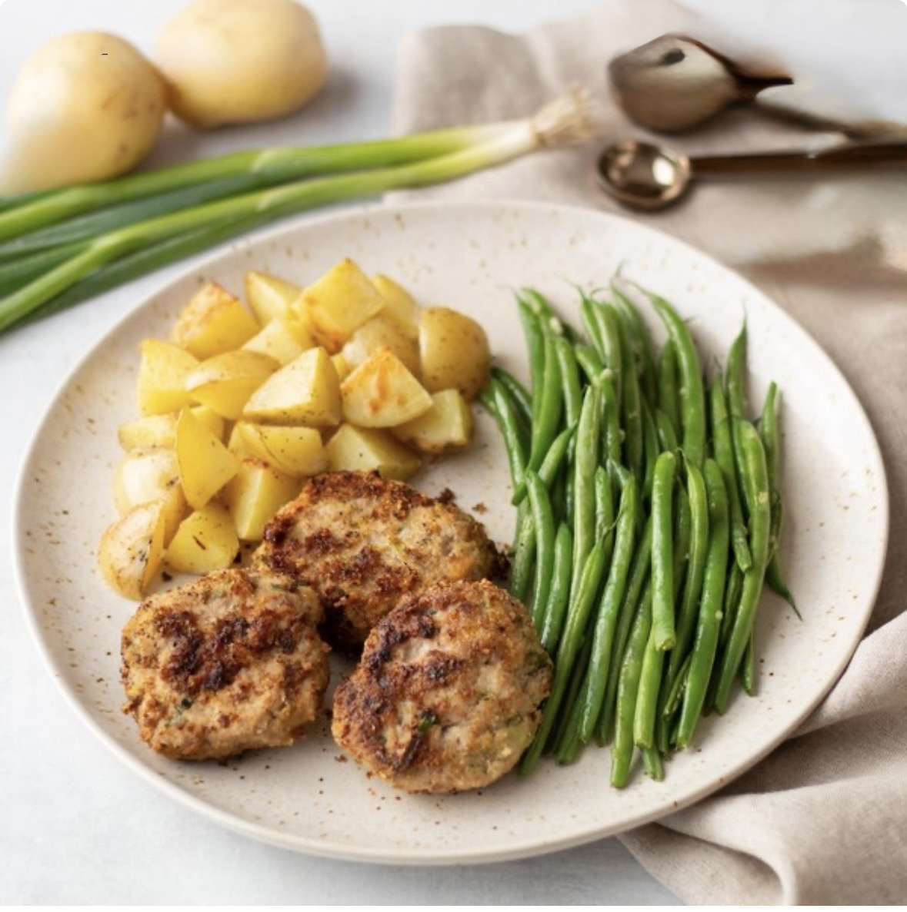

Ingredients
- garlic 4 cloves
- green beans 1 lb
- green onions (scallions) 1 small bunch
- ground turkey 1 ½ lb
- new potatoes 1 lb
- almond meal/flour
- black pepper
- extra virgin olive oil
- salt
Instructions
- Preheat oven to 425°F.
- Wash, dry, and quarter potatoes. Place on one half of a baking sheet pan, drizzle with oil, and season with salt and pepper. Place in the oven (it doesn't have to be fully heated) and bake for 15 minutes.
- Wash, trim, and mince green onions. Peel and mince garlic. Place both in a medium bowl.
- Add turkey, salt, and pepper to the bowl with the onion and garlic; mix until well combined.
- Place almond meal on a plate. Using a ¼ cup measure, portion and form the turkey mixture into ½-inch thick patties and add to the plate. Dredge patties to coat, pressing gently to adhere.
- Preheat a large skillet over medium heat.
- Once the skillet is hot, add oil and swirl to coat the bottom.
- Working in batches, adding additional oil as needed, add turkey patties and cook, turning once, until golden and almost cooked through, about 3 minutes per side. Transfer to another large baking sheet pan and place in the oven; bake until cooked through, 8-10 minutes more.
- Meanwhile, peel and mince additional garlic. Place in a medium bowl along with the oil, salt, and pepper.
- Wash, dry, and trim beans. Add to the bowl with the garlic oil and toss to coat.
- Remove the first baking sheet pan from the oven and toss the potatoes. Add beans and return to the oven. Bake until veggies are fork-tender, stirring once, about 8-10 minutes.
- To serve, divide turkey patties, potatoes, and beans between plates. Enjoy!